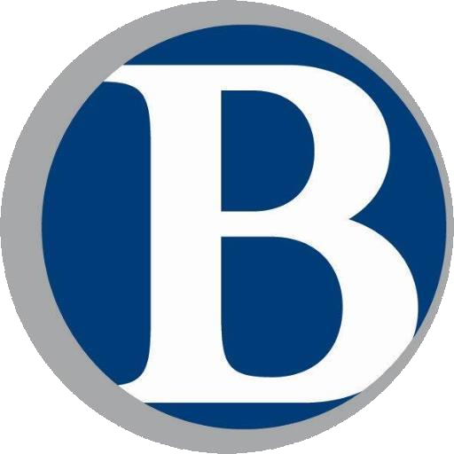
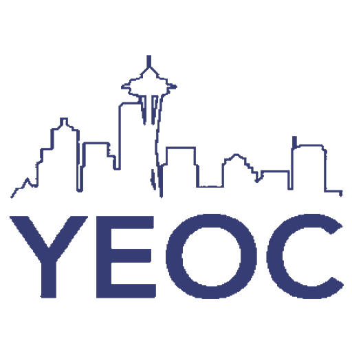

Résumé
Education

University of Washington - Seattle || 2019 - Current
B.S in Informatics
• GPA: 3.58
• Dean's List '19-20
• Notable Courses: INFO 201, INFO 360, CSE 143

Bellevue College Running Start || 2017 - 2019
AA Transfer Degree
• GPA: 3.64
• Notable Courses: CS 210/211, Web Programming 109,
Calculus 151/152, Physics 121, Critical Thinking 115
Hazen High School || 2015 - 2019
High School Diploma
• GPA: 3.82
• Awards: 3x Varsity Letter (Golf), 2x NPSL Scholar
Athlete (Golf), 3x Academic All-Star
• Notable Courses: AP Computer Science
Work Experience
Microsoft || Redmond, WA || June 2021 - September 2021
Explore Intern
• Work on projects using the main development
cycle, Design, Build, & Quality
• Gain experience with software development,
engineering, and product management over 12 weeks
Sano Café || Mercer Island, WA || January 2018 - June 2019
Café Attendant
• Learned to work with customers often
• Learned cashiering and food prep
• Worked managerial roles as closing lead
Organizations
Brotherhood Initiative || 2019 - Current
• Program at UW that helps empower undergraduate males of color.
Lots of team building activities
 Young Executives of Color || September 2018 - May 2019
• Business program hosted through the UW. Taught about various aspects of
business.
I was one of 170 acceptances out of 700+ applicants
• My team was 3rd place in a renowned case competition hosted through YEOC program
Volunteering
Dawgs Crew || September 2019 - Current
• Helped new/returning residents move in
• Assisted with elevator operations and cart pushing.
Volunteer Coach || Mercer Island, WA || November 2017 - March 2018
• Assistant coach for the Mercer Island 7th-8th grade girls basketball team
• Opportunity to work with and mentor youth team during practices
• Ran clock/kept score during games and assisted with playcalling
© 2020 Christian Calloway - All Rights Reserved